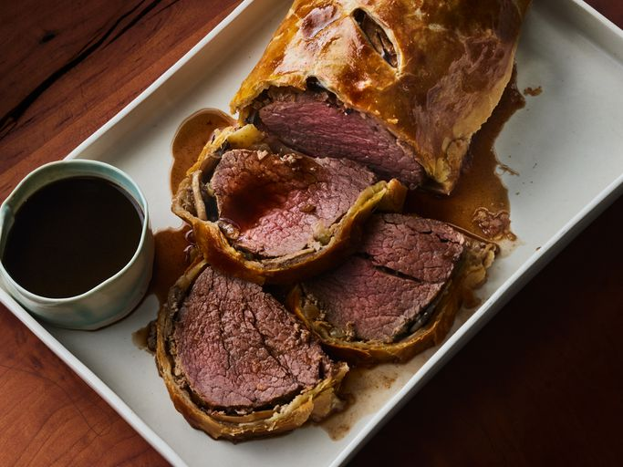

Beef Wellington

Description
Wanna make Gordon Ramsey's last meal? well look no further than the beef wellington
succulent sweet beef surrounded by flaky pastry, what more can you ask for?
Ingredients
- 2.5 lbs of beef tenderloin
- 4 tbsp of butter, softened, and divided
- 2 tbsp of butter
- 1 onion chopped
- 1/2 cup freshly sliced mushrooms
Steps
-
Cover the beef with butter and bake until browned.
-
Sauté the onions and mushrooms in butter. Mix the paté with butter and seasonings.
-
Spread the paté mixture over the beef and top with the veggie mixture.